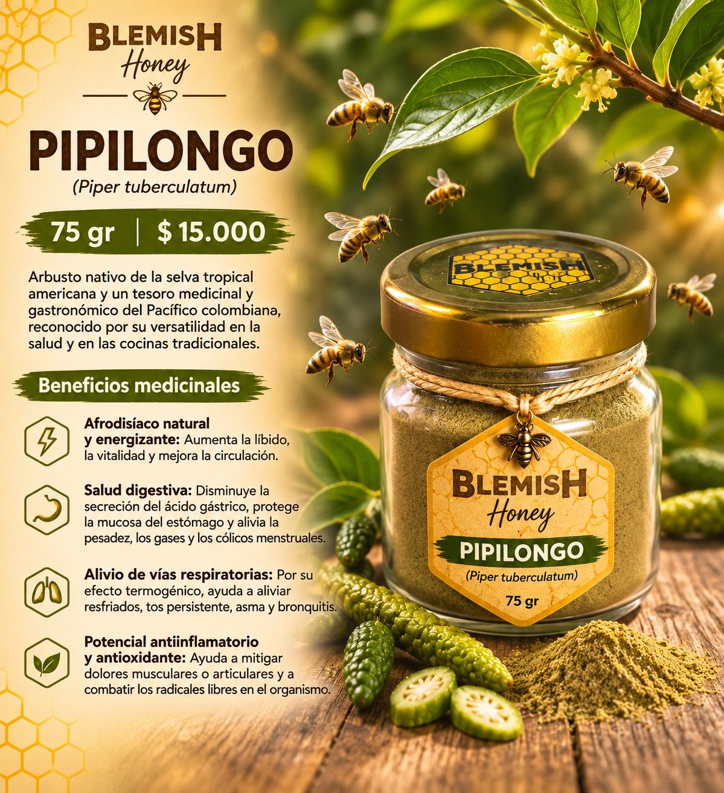

← Volver a Especias · Especias

Pipilongo
Presentación de 75 g · Piper tuberculatum
$15.000 COP
Arbusto nativo de la selva tropical americana y un tesoro medicinal y gastronómico del Pacífico colombiano, reconocido por su versatilidad en la salud y en las cocinas tradicionales.
Características
- Producto: pipilongo (Piper tuberculatum) en polvo
- Empaque: frasco de vidrio con tapa dorada
- Presentación: 75 g
- Precio por presentación: $15.000 COP
Beneficios
- Afrodisíaco natural y energizante: aumenta la libido, la vitalidad y mejora la circulación.
- Salud digestiva: disminuye la secreción del ácido gástrico, protege la mucosa del estómago y alivia la pesadez, los gases y los cólicos menstruales.
- Alivio de vías respiratorias: por su efecto termogénico, ayuda a aliviar resfriados, tos persistente, asma y bronquitis.
- Potencial antiinflamatorio y antioxidante: ayuda a mitigar dolores musculares o articulares y a combatir los radicales libres en el organismo.
Modo de uso
- Licores ancestrales («botellas curadas»): macera sus espigas en viche o ron artesanal para preparar licores tradicionales como el pipilongo o la tomaseca.
- Cocina tradicional: aporta un aroma y sabor único a sancochos, sudados, arroces y platos autóctonos como la chucha en salsa de pipilongo.
- Infusiones: se prepara en infusiones (tés) y, mezclado con miel de abejas (pipimiel), es ideal para despejar la garganta y calmar la tos.
- Asados BBQ: úsalo para sazonar tus asados.
Consulta con un profesional de la salud antes de consumirlo, sobre todo si estás en tratamiento o tienes alguna condición médica.